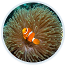
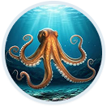
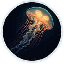
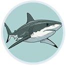
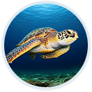
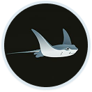

Discovered Species

Octopus

Jellyfish

Shark

Sea Turtle

Stingray
Explore Ocean Depths
Temp: 24C
The Sunlit Surface
The epipelagic zone receives ample sunlight, fueling photosynthesis and supporting the majority of ocean life, including playful dolphins and coastal crabs.